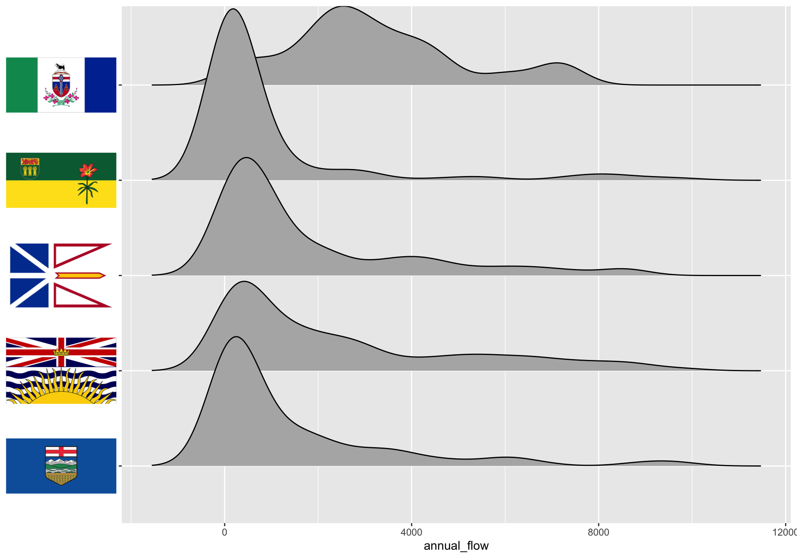
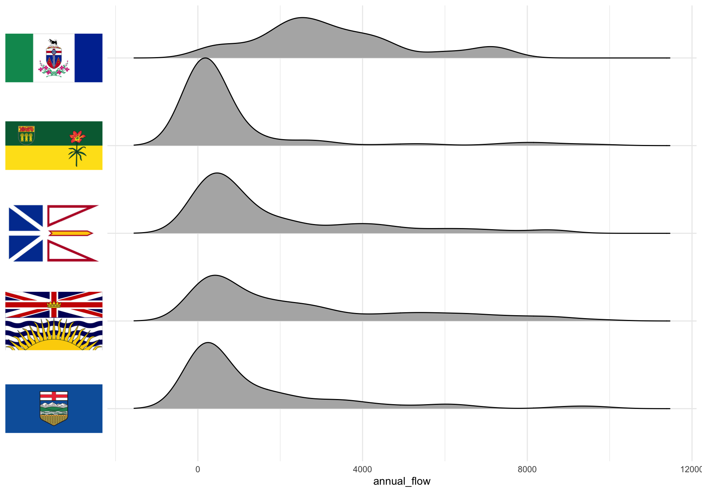
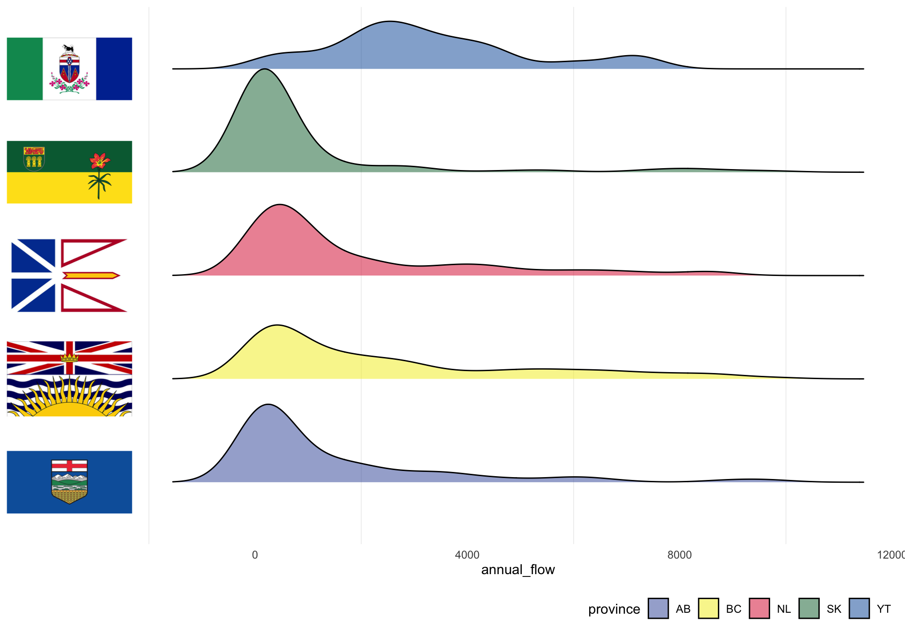
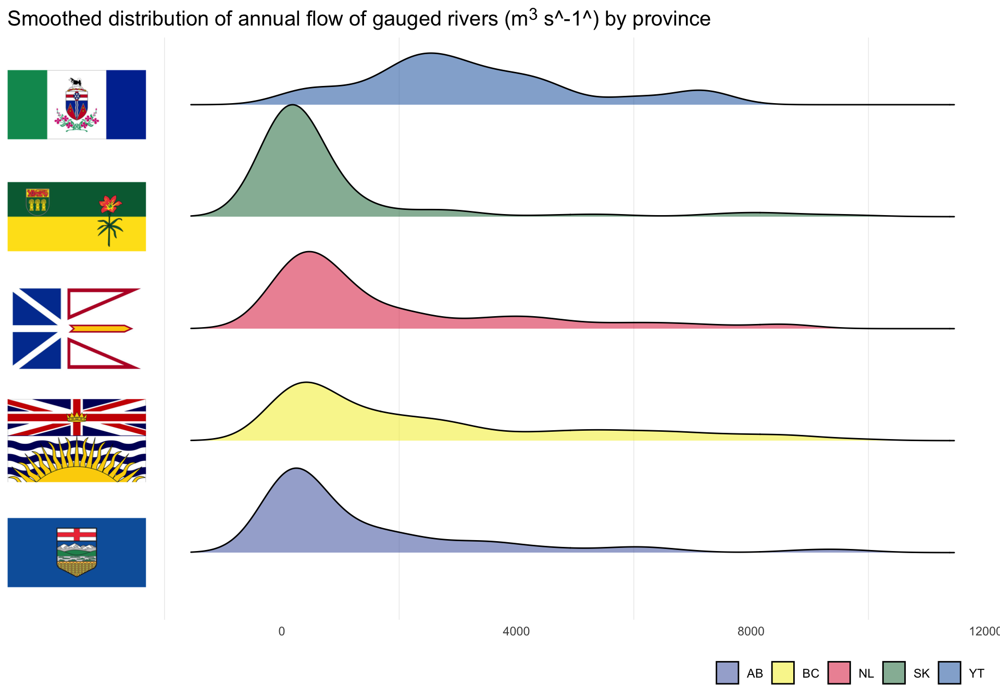

remotes::install_github('wilkelab/ggtext')In January, I was lucky enough to attend the 2020 edition of RStudio::conf. Perhaps predictably, the conference and workshops were exceptional and to see all the wonderful things that folks in the R community are capable of was quite inspiring. People are really quite clever. Attending the tidy dev day was such a nice epilogue to the conference because after spending so much time listening to people talk about their code, I was pretty keen to crack open R and have at it myself. Before I lose everything from the conference to memory leaks, I am going to try to catalogue a few things that I learned at the conference by trying to weave them together into a single workflow.
A brief detour about where to get these packages
Several of the packages that I am using here are at development stages and aren’t yet on CRAN. I’m including the installation instructions here but eventually this process should be as easy as the typical install.packages. For ggtext, which isn’t on CRAN, we install it (and the dev version of ggplot2) from GitHub:
Other packages that I am using are loaded here:
library(fs)
library(purrr)
library(dplyr)
library(arrow)
library(ggtext)
library(ggplot2)
library(lubridate)
library(here)
library(stringr)
library(glue)The arrow package
One of my main goals at the conference was to find out new ways of dealing with very big flat files. I work in an environment where big flat files are sort of our only option. Adding them to a proper database is not currently possible but I was hopeful that maybe the Apache Arrow project might offer up some solutions. I was not disappointed. Neal Richardson with UrsaLabs gave a great presentation on the status of the project with a specific focus on the R package arrow.
Here I am mostly parroting what Neal did with his presentation just replacing taxi data with Canadian hydrometric data. Whether we are provisioned data that way or create it ourselves, consider data organized in a hierarchical folder structure. Here at the top level we have Canadian province:
/Users/samalbers/_dev/gh_repos/samalbers.science/data/rivers-data
├── AB
├── BC
├── NL
├── SK
└── YTwithin each province folder we have year:
/Users/samalbers/_dev/gh_repos/samalbers.science/data/rivers-data/AB
└── 2017within each year folder we have month
/Users/samalbers/_dev/gh_repos/samalbers.science/data/rivers-data/AB/2017
├── 01
├── 02
├── 03
├── 04
├── 05
├── 06
├── 07
├── 08
├── 09
├── 10
├── 11
└── 12and finally within that directory you actually have your data file:
/Users/samalbers/_dev/gh_repos/samalbers.science/data/rivers-data/AB/2017/01
└── rivers.parquetNormally in this situation my approach would be to do some sort of iterative process over each file (mind you still making use of arrow to read the parquet file):
df_rivs <- list.files(here('data/rivers-data/'), pattern = '*.parquet', recursive = TRUE, full.names = TRUE) %>%
map_dfr(read_parquet)From there we might execute some typical sequence designed to filter our data down to a more manageable size.
df_rivs %>%
filter(year(Date) == 2017) %>%
filter(Parameter == 'Flow') %>%
arrange(Date)# A tibble: 309,314 × 5
STATION_NUMBER Date Parameter Value Symbol
<chr> <date> <chr> <dbl> <chr>
1 05AA008 2017-01-01 Flow 1.75 B
2 05AA024 2017-01-01 Flow 8.67 <NA>
3 05AA035 2017-01-01 Flow 1.56 B
4 05AC003 2017-01-01 Flow 0.954 B
5 05AC012 2017-01-01 Flow 0.736 B
6 05AC941 2017-01-01 Flow 1.03 <NA>
7 05AD003 2017-01-01 Flow 3.77 B
8 05AD007 2017-01-01 Flow 24.6 B
9 05AE027 2017-01-01 Flow 4.81 B
10 05AG006 2017-01-01 Flow 24.7 B
# … with 309,304 more rowsWhat we learned in Neal’s presentation was the magic of the open_dataset function and specifically its ability to map hierarchical directory structure to virtual columns in your data. If we read just one parquet file, it is apparent that there aren’t any province, year or month columns:
read_parquet(here('data/rivers-data/AB/2017/01/rivers.parquet'))# A tibble: 3,131 × 5
STATION_NUMBER Date Parameter Value Symbol
* <chr> <date> <chr> <dbl> <chr>
1 05AA008 2017-01-01 Flow 1.75 B
2 05AA024 2017-01-01 Flow 8.67 <NA>
3 05AA035 2017-01-01 Flow 1.56 B
4 05AC003 2017-01-01 Flow 0.954 B
5 05AC012 2017-01-01 Flow 0.736 B
6 05AC941 2017-01-01 Flow 1.03 <NA>
7 05AD003 2017-01-01 Flow 3.77 B
8 05AD007 2017-01-01 Flow 24.6 B
9 05AE027 2017-01-01 Flow 4.81 B
10 05AG006 2017-01-01 Flow 24.7 B
# … with 3,121 more rowsInstead, if we assign partitions, using a vector based on the directory structure, open_dataset can use that information to efficiently subset a larger dataset.
rivs <- open_dataset(here('data/rivers-data/'), partitioning = c('province','year', 'month'))
rivsFileSystemDataset with 60 Parquet files
STATION_NUMBER: string
Date: date32[day]
Parameter: string
Value: double
Symbol: string
province: string
year: int32
month: int32
See $metadata for additional Schema metadataBest of all, the select, filter, group_by and rename dplyr verbs are implemented much like dbplyr and your query is executed lazily taking advantage of both the directory structure and the parquet files.
river_data <- rivs %>%
filter(year == 2017) %>%
filter(province %in% c('BC', 'YT', 'AB', 'SK', 'NL')) %>%
filter(Parameter == 'Flow') %>%
group_by(STATION_NUMBER, province) %>%
collect() %>%
arrange(Date)While YMMV depending on the size of your data, using folder structure is a nifty way to only access the data we actually need. The Apache Arrow project, and for R users the arrow package, are proceeding very nicely. Now that we have efficiently pared down our river flow data, the next exciting thing I want to explore is some really cool developments in the ggplot2 sphere.
The ggtext package
The ggtext package by Claus Wilke provides much improved rendering support for ggplot2. What feels like should a simple task (e.g. colour some portion of text) is sometimes quite onerous in ggplot2. Though the package is still in its infancy, ggtext is breaking trail on making these steps much easier by providing a mini markdown engine directly inside ggplot2. After audible ohhs and ahhs from the crowd while demoing ggtext, Claus observed “I can see this fills a need”. Already it provides some support for markdown and html rendering.

So how can we use it to better visualize our river data? Because ggtext has some minimal html rendering, we can actually include images right inside the ggplot call. My idea was to try and see if I could include provincial flags as axes labels in the plot. This requires steps to:
- get the files
- extract the province name from the file name
- create a new column in our rivers data because the provinces aren’t labelled in the same way
- glue the image names with the html snippets
I won’t go into too much detail but here are the steps:
Get the Data
dir.create("data/flags")
download.file("https://cdn.britannica.com/40/5440-004-BE91E74F/Flag-Alberta.jpg", destfile = "data/flags/AB.jpeg")
download.file("https://cdn.britannica.com/63/5263-004-1C2B7CDE/Flag-Yukon-Territory.jpg", destfile = "data/flags/YT.jpeg")
download.file("https://cdn.britannica.com/18/3918-004-9D01BB0E/Flag-Saskatchewan.jpg", destfile = "data/flags/SK.jpeg")
download.file("https://cdn.britannica.com/92/2992-004-54C721CF/Flag-Newfoundland-and-Labrador.jpg", destfile = "data/flags/NL.jpeg")
download.file("https://cdn.britannica.com/77/6877-004-26251B48/Flag-British-Columbia.jpg", destfile = "data/flags/BC.jpeg")Extract Province
flag_paths <- dir_ls(here('data/flags'), glob = '*.jpeg')Design Nicer Plots
RStudio::conf had a thread of design thinking running through the workshops and conference. From the tidyverse’s near obsession with the design of their api to the inclusion of a live episode of Not So Standard deviation as a keynote, thinking about data science from a design perspective was a key theme that emerged for me. One example of this was Will Chase’s wonderful talk on the Glamour of Graphics. Will presented some very thoughtful approaches to creating better visualizations. I am going to butcher apply some of those approaches to our plot above.
Hydrologically Relevant
First off, our plot is rather uninformative from hydrological perspective. A reasonable goal for this plot would be to aid the user to evaluate the distribution of annual river flow by province. In the above plot, the extreme values are stretching the scale too far out so let’s limit our analysis to rivers that output less that 10,000 m3/s per year.
annual_flow_sub <- annual_flow %>%
filter(annual_flow < 10000)Also the basic point plot doesn’t give us a great way to look at the distribution. For that task, another of Claus’s packages, ggridges comes in handy. ggridges is great for visualizing distributions and also forces us to flip the axes creating a more natural information flow (at least for those of us that read left to right).
library(ggridges)
annual_flow_sub %>%
ggplot(aes(y = province, x = annual_flow)) +
geom_density_ridges() +
scale_y_discrete(name = NULL, labels = img_tags) +
theme(axis.text.y = element_markdown(color = 'black', size = 11))
A great line from Will’s presentation pertained to white space:
White space is like garlic; take the amount you think you need, then triple it.
Right then let’s create some more white space by getting rid of the classic ggplot2 grey background. Here we can also tweak the height of the ridges to better show the distributions.
annual_flow_sub %>%
ggplot(aes(y = province, x = annual_flow)) +
geom_density_ridges(scale = 1) +
scale_y_discrete(name = NULL, labels = img_tags) +
theme_minimal() +
theme(axis.text.y = element_markdown(color = 'black', size = 11))
Ok looking a bit better. Another one of Will’s suggestion is to remove grid lines as much as possible. I basically agree and just keep the minor x values.
annual_flow_sub %>%
ggplot(aes(y = province, x = annual_flow)) +
geom_density_ridges(scale = 1) +
scale_y_discrete(name = NULL, labels = img_tags) +
theme_minimal() +
theme(axis.text.y = element_markdown(color = 'black', size = 11),
panel.grid.major = element_blank(),
panel.grid.minor.y = element_blank())✔️ Now we need some colour here. As Will stated colour is hard. My goal here is pretty modest. I just want to distinguish between provinces. To do that I am actually going to steal some colour from the flags and manually map those to fill in colour for the ridges. At the same time I am going to add some transparency to the ridges. I am going to deviate a little from Will’s advice here and keep the legend. I often get this way with plots and err on the side of caution. In this case I am thinking that folks won’t recognize the flags and therefore will use the legend. In general though I do like the approach of forcing legends to justify their existence - they need to earn their keep.
flag_cols <- c('#3853a4',
'#f3ec18',
'#da1a33',
'#006b35',
'#0054a5')
annual_flow_sub %>%
ggplot(aes(y = province, x = annual_flow, fill = province)) +
geom_density_ridges(scale = 1, alpha = 0.5) +
scale_fill_manual(values = flag_cols) +
scale_y_discrete(name = NULL, labels = img_tags) +
theme_minimal() +
theme(axis.text.y = element_markdown(color = 'black', size = 11),
panel.grid.major = element_blank(),
panel.grid.minor.y = element_blank(),
legend.position = 'bottom',
legend.justification='right')
Lastly this plot needs a title, which according to Will’s sage advice is also a great way to remove axes labels - just explain it in the title.
annual_flow_sub %>%
ggplot(aes(y = province, x = annual_flow, fill = province)) +
geom_density_ridges(scale = 1, alpha = 0.5) +
scale_fill_manual(name = NULL, values = flag_cols) +
scale_y_discrete(name = NULL, labels = img_tags) +
labs(title = 'Smoothed distribution of annual flow of gauged rivers (m^3^ s^-1^) by province') +
theme_minimal() +
theme(axis.text.y = element_markdown(color = 'black', size = 11),
axis.title.x = element_blank(),
panel.grid.major = element_blank(),
panel.grid.minor.y = element_blank(),
plot.title.position = 'plot',
plot.title = element_markdown(size = 15),
legend.position = 'bottom',
legend.justification='right')
From a visualization perspective this isn’t perfect or even great. Legends are still problematic, I don’t even know if the flags add anything and grid lines feel like an addiction. Still I think this does provide a decent overview of the types of rivers that are gauged in each province. Remembering that we previously subset all our river flow data to less than 10000, the Yukon gauges bigger rivers while Saskatchewan gauges many smaller rivers. BC and Newfoundland gauge a wide range of rivers types. Alberta gauges rivers that reflect both its mountain and prairies landscapes.
Back to RStudio conf
This has been a mini tour through some concept and packages I took in while attending RStudio::conf 2020. I can’t wait to spend more time with these packages as they mature and development. Every time I connect with the R community, I am grateful to be part of it. RStudio itself presents with class and respect all while creating a positive and inclusive space. I’m looking forward to future opportunities to connect with all you nerds!